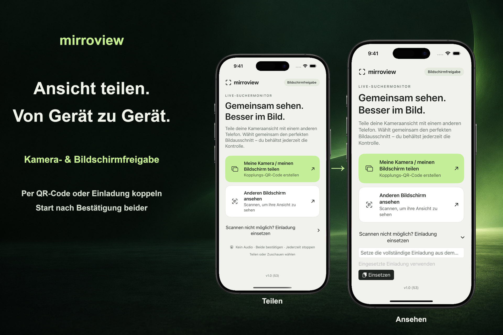

Vor Ort koppeln
Eine Person teilt eine Einladung. Die andere Person scannt den QR-Code oder fügt die Einladung ein, anschließend bestätigen beide die Sitzung.
Eine gemeinsame Ansicht, bewusst gewählt
Teile den Bildschirm deines iPhones oder iPads mit jemandem in der Nähe. Beide Geräte benötigen iOS oder iPadOS 17 oder neuer. Beide Personen bestätigen die Sitzung, und die sendende Person gibt die Bildschirmaufnahme über die Systemoberfläche frei.

Eine Person teilt eine Einladung. Die andere Person scannt den QR-Code oder fügt die Einladung ein, anschließend bestätigen beide die Sitzung.
Über den Startbildschirm wird die Freigabe des gesamten Bildschirms gestartet. Nach der Autorisierung durch iOS oder iPadOS kann die sendende Person eine andere App – einschließlich der Kamera-App – öffnen, um deren Bildschirm zu zeigen.
Beende die Sitzung jederzeit auf einem der beiden Geräte. Nutze für die erste Verbindung dasselbe erreichbare lokale WLAN. Die Verfügbarkeit von Verbindungen in der Nähe hängt von den Geräten, der Systemunterstützung und den Funkbedingungen ab.
Bei der Bildschirmfreigabe können Mitteilungen und andere private Informationen sichtbar werden. Die App überträgt keinen Ton. Die zusehende Person kann dennoch Bildschirmfotos oder Bildschirmaufnahmen machen oder das Angezeigte abfotografieren. Einige geschützte Inhalte bleiben möglicherweise schwarz.